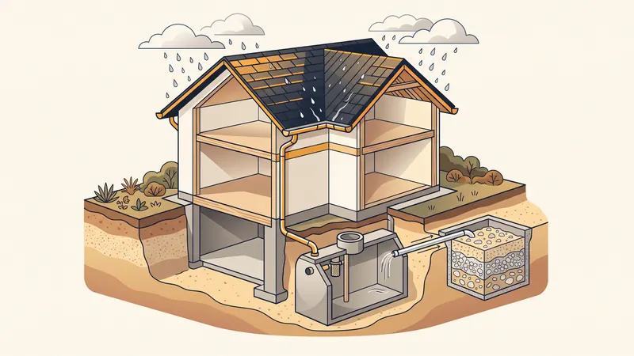

Gestion des Eaux Pluviales : Règles & Prix 2027
Devis gratuit sous 24 h 07 45 14 20 49 WhatsAppNotre service : drainage de terrain
En bref
- Peut-on encore rejeter ses eaux pluviales au tout-à-l'égout en 2027 ? De moins en moins. Sur les réseaux séparatifs, désormais la norme, le rejet des eaux pluviales dans le réseau d'eaux usées est interdit. La règle générale est la gestion à la parcelle par infiltration.
- Suis-je obligé de gérer mes eaux pluviales sur mon terrain ? Oui, dans la grande majorité des cas.
- Qu'est-ce qu'un test de perméabilité Porchet ? Le test Porchet est un essai d'infiltration qui mesure la capacité du sol à absorber l'eau, exprimée en mm/h ou en coefficient K (m/s). On creuse un trou normalisé, on le sature puis on chronomètre la vitesse de descente du niveau d'eau.
La gestion des eaux pluviales d'une maison n'est plus une option facultative : elle est devenue une obligation réglementaire dans la quasi-totalité des communes. Fini le temps où l'on raccordait sa gouttière au tout-à-l'égout sans se poser de questions. Aujourd'hui, le principe est clair : gérer l'eau de pluie à la parcelle, c'est-à-dire l'infiltrer sur son propre terrain. Dans ce guide, nous détaillons la réglementation 2027, les solutions techniques (infiltration, rétention, récupération), les prix pratiqués à Aix-en-Provence et en PACA, ainsi que la méthode de dimensionnement.

Sommaire
- Réglementation : que dit la loi en 2027 ?
- Les solutions techniques de gestion des eaux pluviales
- Prix des solutions de gestion des eaux pluviales en 2027
- Test de perméabilité et dimensionnement
- Spécificités de la gestion des eaux pluviales en PACA
- Les erreurs courantes à éviter
- Questions fréquentes
- Pourquoi faire appel à un pro comme STP Terrassement
Réglementation : que dit la loi en 2027 ?
La réglementation sur l'évacuation des eaux de pluie s'est nettement durcie ces dernières années. Trois principes structurent désormais toute installation neuve ou rénovée.
1. L'interdiction croissante du rejet au tout-à-l'égout
La plupart des communes ont basculé vers des réseaux séparatifs : un réseau pour les eaux usées, un autre pour les eaux pluviales. Le mélange des deux est désormais interdit. Concrètement, vous ne pouvez plus diriger vos descentes de gouttière vers le réseau d'eaux usées (le « tout-à-l'égout »). Si votre maison est ancienne et encore raccordée ainsi, une mise en conformité peut vous être demandée lors d'un contrôle ou d'une vente. Pour comprendre la différence entre les réseaux, consultez notre comparatif fosse septique vs tout-à-l'égout.
2. L'obligation de gestion à la parcelle
Le principe directeur est la gestion à la parcelle par infiltration : l'eau de pluie qui tombe sur votre toiture, votre terrasse et vos allées doit, autant que possible, être infiltrée sur votre propre terrain. Le rejet au réseau pluvial public n'est autorisé qu'en dernier recours, lorsque l'infiltration est techniquement impossible (sol imperméable, nappe affleurante), et fréquemment avec une limitation de débit de fuite imposée par la collectivité. Le cas particulier de l'enrobé poreux est détaillé dans notre guide sur le prix de l'enrobé drainant.
3. Le rôle du PLU et du règlement d'assainissement
Deux documents font foi à l'échelle locale :
- Le PLU (Plan Local d'Urbanisme) : il fixe souvent un coefficient d'imperméabilisation maximal, impose une surface minimale en pleine terre et peut exiger des ouvrages de rétention.
- Le règlement d'assainissement communal ou intercommunal : il précise les modalités techniques (débit de fuite autorisé, période de retour de pluie à retenir, type d'ouvrages admis).
Avant tout chantier, il est indispensable de consulter ces documents en mairie. Selon la taille du projet et la surface imperméabilisée, une déclaration (voire une autorisation au titre de la loi sur l'eau) peut être nécessaire. Pour une maison individuelle, les ouvrages d'infiltration ne requièrent généralement pas d'autorisation d'urbanisme, mais doivent respecter le règlement local.

Les solutions techniques de gestion des eaux pluviales
Plusieurs dispositifs permettent de gérer l'eau de pluie à la parcelle. Le choix dépend de la perméabilité du sol, de la surface à traiter, de la place disponible et du budget. Nos équipes de VRD et assainissement les mettent en oeuvre quotidiennement.
Le puits d'infiltration (puits perdu)
Ouvrage vertical creusé jusqu'à une couche perméable, le puits perdu (ou puits d'infiltration) concentre l'eau collectée et la restitue en profondeur dans le sol. C'est la solution de référence quand la surface au sol est limitée mais que le sous-sol est perméable. Sa profondeur varie de 2 à 5 m selon la géologie.
La tranchée drainante et le massif drainant
La tranchée drainante est une fouille linéaire remplie de matériaux drainants (galets, graviers) enveloppant un drain perforé, qui répartit l'infiltration sur une grande longueur. Le massif drainant (ou massif d'infiltration) joue le même rôle sous forme de volume enterré. Ces solutions sont idéales sur les terrains plats à perméabilité moyenne. Pour le détail du creusement, voir notre guide prix d'une tranchée au ml et notre guide du drainage de terrain.
La noue paysagère
Fossé large et peu profond, végétalisé, la noue collecte, stocke temporairement et infiltre l'eau de ruissellement tout en s'intégrant au jardin. Économique et écologique, elle est très appréciée des PLU récents qui favorisent les solutions « nature ».
Le drainage périphérique
Le drainage périphérique protège les fondations et le sous-sol en captant l'eau autour du bâtiment via un drain posé en pied de mur. Il se combine généralement avec un ouvrage d'infiltration ou un exutoire. Indispensable sur les terrains en pente ou argileux.
La cuve de rétention / récupération
La cuve de rétention stocke temporairement l'eau pour la relâcher à débit régulé vers le réseau ou l'infiltration. La cuve de récupération va plus loin : elle réutilise l'eau de pluie pour l'arrosage, le lavage extérieur, voire les WC et le lave-linge via un réseau séparé. En PACA, cette double fonction est particulièrement pertinente en période de restriction d'eau.
Prix des solutions de gestion des eaux pluviales en 2027
Voici les fourchettes de prix constatées en 2027 dans la région d'Aix-en-Provence pour les principales solutions, pose comprise :
| Solution | Prix indicatif (TTC) | Remarques |
|---|---|---|
| Drain périphérique | 40 - 80 €/ml | Construction neuve, fouille ouverte ; 150 - 300 €/ml autour d'une maison existante |
| Tranchée drainante (d'infiltration) | 70 - 150 €/ml | Fourniture des matériaux drainants incluse |
| Puits perdu / puits d'infiltration | 1 500 - 3 000 € | Busé Ø1 m, 2 à 3 m de profondeur ; gros volume 3 000 - 5 000 € |
| Massif drainant enterré | 60 - 120 €/m³ | Avec géotextile et matériaux |
| Noue paysagère | 15 - 40 €/ml | Hors plantations et finitions ; + amenée d'engin 300 - 400 € |
| Cuve de rétention / récupération | 3 000 - 11 000 € | Enterrée et posée, selon volume (3 à 10 m³) ; 4 500 - 7 000 € pour 5 m³ |
Pour situer ce poste dans un budget complet, voir notre grille des prix de terrassement et VRD 2027.
Ces tarifs incluent la main-d'oeuvre et les engins de terrassement. Ils varient ensuite selon plusieurs facteurs techniques détaillés ci-dessous.
Les facteurs qui font varier le prix
| Facteur | Impact sur le prix |
|---|---|
| Perméabilité du sol (test Porchet) | Un sol peu perméable impose des ouvrages plus grands : +20 à +50 % |
| Surface imperméabilisée à gérer | Plus la toiture + terrasse + allées sont grandes, plus le volume à stocker augmente |
| Profondeur de la nappe phréatique | Une nappe haute limite l'infiltration et impose rétention ou rejet régulé : +15 à +40 % |
| Nature du sol (calcaire dur) | Le forage en rocher allonge le chantier : +20 à +40 % |
| Accessibilité du chantier | Terrain enclavé ou pente forte : +10 à +25 % |
Obtenez Votre Devis Eaux Pluviales Gratuit
Chez STP Terrassement, nous étudions votre sol, dimensionnons vos ouvrages et les réalisons dans les règles à Aix-en-Provence et dans toute la PACA. Devis détaillé sous 24h, sans engagement.
Pressé ? 07 45 14 20 49 ou WhatsApp
Test de perméabilité et dimensionnement
Le test de perméabilité Porchet
Avant tout dimensionnement, il faut connaître la capacité d'absorption du sol grâce au test de perméabilité Porchet. On creuse un trou normalisé, on le sature en eau, puis on chronomètre la vitesse de descente du niveau. Le résultat s'exprime en mm/h ou en coefficient de perméabilité K (m/s). Un sol est considéré comme correctement infiltrant au-delà de 10 à 15 mm/h ; en dessous, il faut surdimensionner l'ouvrage ou prévoir une rétention avec rejet régulé.
Le dimensionnement selon la surface de toiture
Le volume d'eau à gérer se calcule en croisant trois données :
- La surface imperméabilisée (projection horizontale de la toiture + terrasses + allées).
- Le coefficient de ruissellement : environ 0,9 à 1 pour une toiture, 0,7 à 0,9 pour une terrasse, 0,3 à 0,6 pour un gravier.
- L'intensité de pluie de référence locale, fixée par le règlement d'assainissement (période de retour 10, 20 ou 30 ans).
On combine ce volume avec le résultat du test Porchet pour calibrer la taille du puits, la longueur de tranchée ou le volume de la cuve. Un dimensionnement insuffisant provoque débordements et ruissellement vers les voisins ; un surdimensionnement gonfle inutilement la facture. C'est tout l'intérêt de confier ce calcul à un professionnel.
Spécificités de la gestion des eaux pluviales en PACA
La région Provence-Alpes-Côte d'Azur présente un profil hydrologique particulièrement exigeant :
- Épisodes méditerranéens et cévenols : il peut tomber en quelques heures l'équivalent de plusieurs semaines de pluie, saturant brutalement les réseaux et les ouvrages sous-dimensionnés.
- Sols calcaires peu perméables par endroits : autour d'Aix-en-Provence, la roche calcaire alterne zones fissurées très drainantes et bancs compacts quasi imperméables. D'où l'importance du test de sol.
- Forte imperméabilisation : l'urbanisation dense réduit les surfaces d'infiltration naturelle et aggrave les ruissellements.
- Sécheresse estivale : la récupération d'eau de pluie prend tout son sens face aux restrictions d'usage récurrentes.
Dans ce contexte, un dimensionnement rigoureux n'est pas un luxe : c'est la garantie d'éviter inondations, dégâts aux fondations et litiges de voisinage.
Les erreurs courantes à éviter
- Raccorder ses gouttières au tout-à-l'égout. Sur réseau séparatif, c'est interdit et passible de mise en conformité à vos frais. Vérifiez toujours le type de réseau de votre commune.
- Faire l'impasse sur le test de perméabilité. Sans test Porchet, impossible de dimensionner correctement : l'ouvrage est soit inefficace, soit ruineusement surdimensionné.
- Sous-estimer la surface imperméabilisée. On oublie souvent la terrasse, l'allée et l'abri de jardin, ce qui conduit à un dispositif trop petit qui déborde au premier gros orage.
- Rejeter l'eau chez le voisin ou sur la voie publique. Le ruissellement non maîtrisé vers le terrain voisin engage votre responsabilité et provoque des litiges fréquents.
- Négliger le drainage périphérique des fondations. L'eau qui stagne contre les murs enterrés provoque infiltrations, salpêtre et tassements différentiels.
- Ignorer le PLU et le règlement d'assainissement. Chaque commune fixe ses propres débits de fuite et obligations. Construire sans les consulter expose à un refus de conformité.
Questions fréquentes
Peut-on encore rejeter ses eaux pluviales au tout-à-l'égout en 2027 ?
De moins en moins. Sur les réseaux séparatifs, désormais la norme, le rejet des eaux pluviales dans le réseau d'eaux usées est interdit. La règle générale est la gestion à la parcelle par infiltration. Le rejet au réseau pluvial public n'est autorisé qu'en dernier recours, après accord du gestionnaire et souvent avec limitation de débit.
Suis-je obligé de gérer mes eaux pluviales sur mon terrain ?
Oui, dans la grande majorité des cas. Le PLU et le règlement d'assainissement de votre commune imposent presque toujours la gestion à la parcelle, c'est-à-dire l'infiltration des eaux de pluie sur votre propre terrain, sauf impossibilité technique avérée (sol imperméable, nappe haute) justifiée par une étude.
Qu'est-ce qu'un test de perméabilité Porchet ?
Le test Porchet est un essai d'infiltration qui mesure la capacité du sol à absorber l'eau, exprimée en mm/h ou en coefficient K (m/s). On creuse un trou normalisé, on le sature puis on chronomètre la vitesse de descente du niveau d'eau. Ce résultat permet de dimensionner correctement un puits d'infiltration ou une tranchée drainante.
Combien coûte un puits d'infiltration (puits perdu) en 2027 ?
Un puits d'infiltration, aussi appelé puits perdu, coûte entre 1 500 et 3 000 € pour un ouvrage busé de Ø1 m sur 2 à 3 m de profondeur, et 3 000 à 5 000 € pour un gros volume, selon la nature du sol et l'accessibilité du chantier. En sol calcaire dur autour d'Aix-en-Provence, le forage est plus long et le tarif tend vers le haut de la fourchette.
Faut-il une déclaration en mairie pour gérer ses eaux pluviales ?
Pour une maison individuelle, les ouvrages d'infiltration ne nécessitent généralement pas d'autorisation d'urbanisme, mais le dispositif doit respecter le règlement d'assainissement communal. Tout raccordement au réseau pluvial public exige une demande et l'accord du gestionnaire. Pour les grands projets, une déclaration ou autorisation au titre de la loi sur l'eau peut être requise.
Comment dimensionner ma solution selon la surface de toiture ?
On calcule le volume d'eau à gérer en multipliant la surface imperméabilisée (toiture, terrasse, allée) par un coefficient de ruissellement (0,9 à 1 pour une toiture) et par l'intensité de pluie de référence locale. Ce volume, combiné au résultat du test de perméabilité, détermine le dimensionnement du puits, de la tranchée ou de la cuve de rétention.
Peut-on récupérer l'eau de pluie pour l'arrosage ou les WC ?
Oui. Une cuve de récupération enterrée (3 000 à 11 000 € posée selon le volume, 4 500 à 7 000 € pour 5 000 litres) permet d'utiliser l'eau de pluie pour l'arrosage, le lavage extérieur et, avec un réseau séparé identifié, l'alimentation des WC et du lave-linge. C'est une solution doublement intéressante en PACA, où elle réduit la consommation d'eau potable en période de sécheresse.
Pourquoi la gestion des eaux pluviales est-elle critique en PACA ?
La région connaît des épisodes méditerranéens et cévenols où il tombe en quelques heures l'équivalent de plusieurs semaines de pluie. Combinés à des sols calcaires parfois peu perméables et à une forte imperméabilisation, ces orages provoquent ruissellements et inondations. Un dimensionnement sérieux des ouvrages est donc indispensable.
Pour vérifier les règles applicables : le guichet des déclarations de travaux à proximité des réseaux (DT-DICT) et le permis de construire sur Service-Public.fr.
Pour aller plus loin
Pourquoi faire appel à un pro comme STP Terrassement
Confier la gestion de vos eaux pluviales à STP Terrassement, c'est s'appuyer sur une entreprise locale implantée à Simiane-Collongue (13109) et intervenant chaque jour à Aix-en-Provence et dans toute la région PACA. Forts d'une équipe de 15 ans d'expérience, nous maîtrisons l'ensemble de la chaîne : test de perméabilité, lecture du PLU et du règlement d'assainissement, dimensionnement, terrassement et pose des ouvrages (puits d'infiltration, tranchées drainantes, drains périphériques, cuves de rétention et de récupération). Nos équipes disposent d'un parc d'engins récents, d'une garantie décennale en cours de validité et d'une assurance RC Pro. Nous établissons un devis détaillé gratuit et sans engagement sous 24h, nous respectons les plannings et le budget validé, et nous fournissons à la réception tous les documents de conformité. Demandez votre devis gratuit en ligne ou appelez-nous au 07 45 14 20 49 pour échanger directement avec un chargé d'affaires.